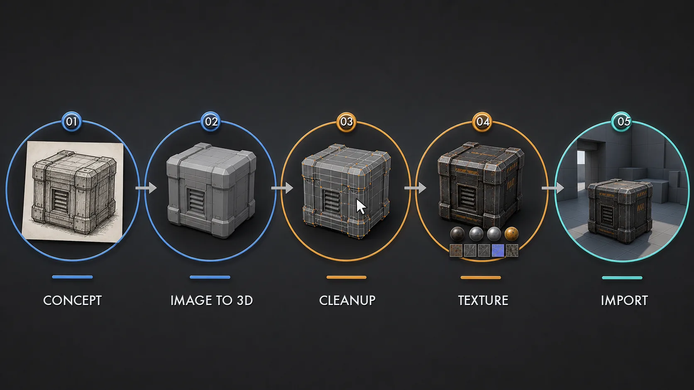
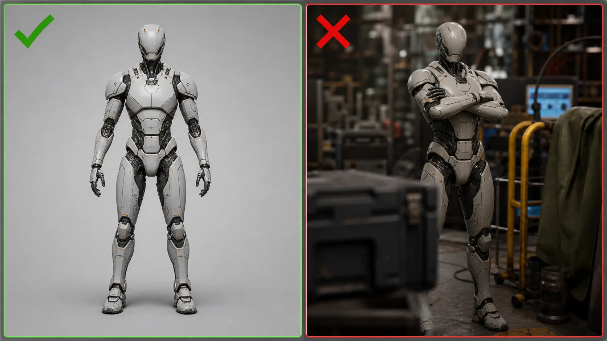
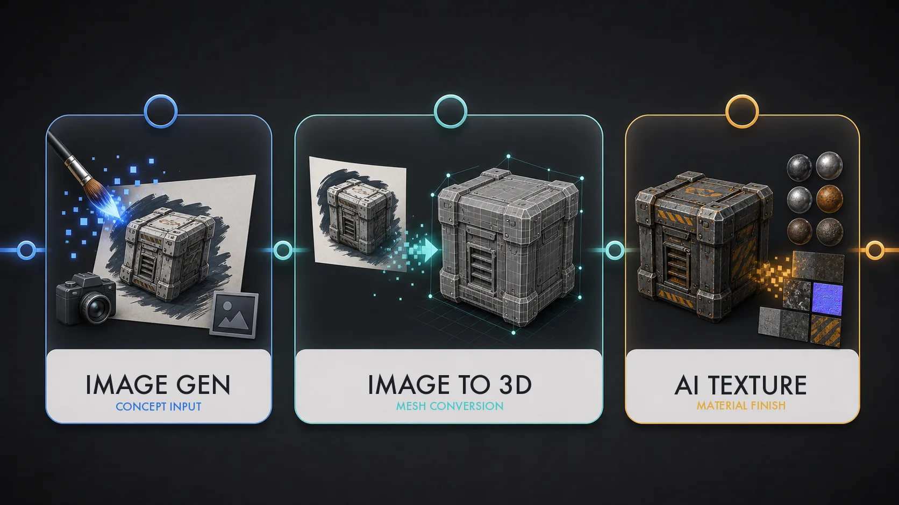
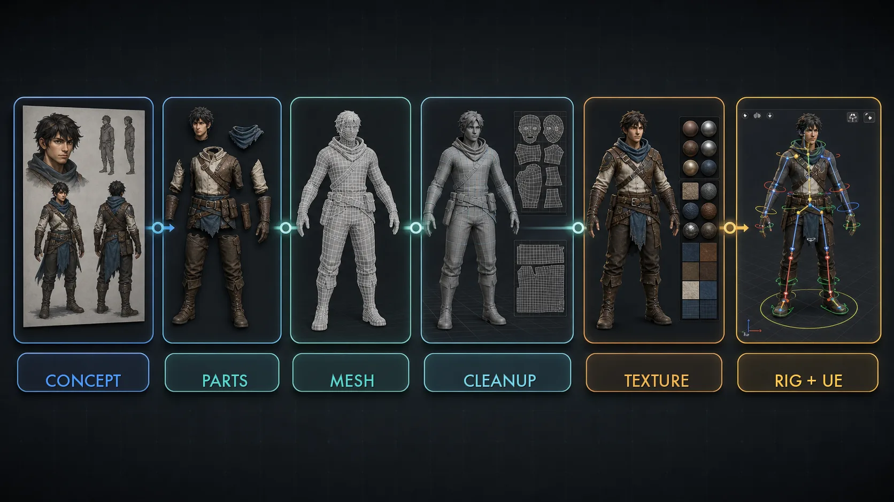
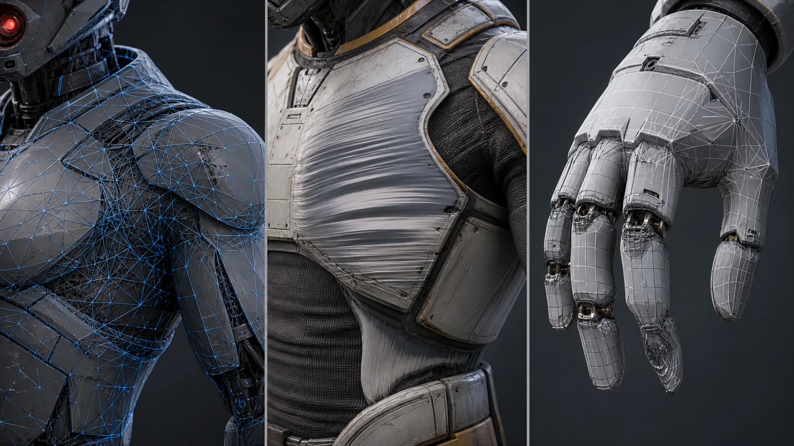
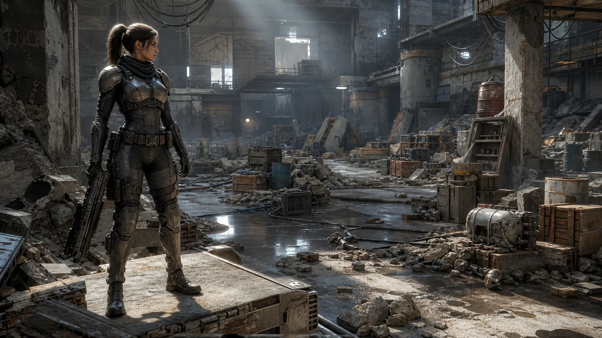

12주차 1교시 — 생성형 AI 에셋 워크플로우 + AI 도구 (학생용)
관련 문서
| 관계 | 문서 |
|---|---|
| 강의 계획서 | 강의계획서: Game Engine II |
| 강의 아웃라인 | 12주차 아웃라인: 3D 애셋 제작 및 AI 활용 |
| 2교시 핸드아웃 | 12주차 2교시: 외부 3D 에셋 임포트·최적화 |
| 3교시 핸드아웃 | 12주차 3교시: 기말 컨셉 환경 블록아웃 |
| 선행 11주차 3교시 | 11주차 3교시: 격투 시네마틱 실습 |
- 생성형 AI 3D 파이프라인 5단계(컨셉 이미지 → image-to-3D → 메시 정리 → 텍스처 → 임포트)의 흐름을 설명할 수 있다
- 각 단계에서 어디까지 AI에 맡기고 어디부터 사람이 정리·판단하는지 구분할 수 있다
- image-to-3D 도구(Tripo / Meshy 등)의 지형과 무료 티어·라이선스 차이를 판단할 수 있다
- AI 3D 메시의 품질 한계와 적정 용도(배경·소품 vs 메인 에셋)를 판단할 수 있다
지난 3주 동안 시네마틱 한 편을 만드는 흐름을 단계별로 밟아왔습니다. 10주차에 캐릭터, 11주차에 카메라를 다뤘습니다. 12주차는 캐릭터와 카메라가 놓일 무대, 즉 환경을 채우는 주차입니다. 새 캐릭터나 새 카메라를 만드는 시간이 아니라, 본인 기말 시네마틱이 펼쳐질 공간을 3D 에셋으로 빠르게 구축하는 것이 목표입니다.
1교시는 그 환경에 들어갈 3D 에셋을 AI로 만드는 방법을 다룹니다. 개념과 도구 지형을 잡고, AI로 에셋 하나를 만드는 과정을 살펴봅니다. 언리얼에 직접 에셋을 들여오고 다듬는 것은 2교시, 본인 환경에 적용하는 것은 3교시입니다.
도입 — 이미지 한 장에서 시작하는 3D
AI로 3D를 만드는 실무 사례를 두 편 살펴봅니다.
- 〈이미지 한 장으로 언리얼 캐릭터까지 만들어봤습니다〉 — 컨셉 이미지 한 장에서 시작해 AI로 3D 모델을 만들고, 정리하고, 텍스처를 입히고, 리깅해 언리얼 안에서 움직이는 캐릭터까지 만든 사례입니다.
- 〈언리얼 AI 시네마틱 하나로 1,200만 원 수익 인증〉 — 포스트 아포칼립스 시네마틱을 혼자 기획부터 완성까지 만들면서, 배경 에셋을 AI로 생성해 채워 넣은 사례입니다.
AI 3D는 1인 제작자의 '에셋 병목'을 푸는 도구입니다. 예전에는 3D 에셋 하나를 만들려면 모델링·UV·텍스처에 며칠씩 걸렸습니다. AI는 그 출발점을 몇 분으로 줄여줍니다. 단, 두 영상 모두 버튼 한 번으로 완성품이 나오는 단계는 아직 아니다라고 말합니다. 이 점이 1교시 내내 따라다니는 핵심입니다.
오늘의 목표: AI로 3D 에셋을 만드는 전체 흐름을 이해하고, 어디까지 AI에 맡기고 어디부터 사람이 손대야 하는지 구분합니다.
핵심 개념 1 — 생성형 AI 3D 파이프라인 5단계
AI로 3D를 만든다고 하면 "이미지를 넣으면 3D가 나온다"고 생각하기 쉽습니다. 절반만 맞습니다. image-to-3D라는 단계 하나는 그렇지만, 그 앞뒤로 사람이 하는 일이 더 있습니다.
그래서 AI 3D 제작을 5단계 파이프라인으로 봅니다. 단계로 쪼개면 어느 단계가 AI의 몫이고 어느 단계가 사람의 몫인지 한눈에 보입니다. 그것을 모르면 AI가 생성한 결과를 그대로 믿고 쓰다가 나중에 문제가 생깁니다.
5단계 전체 그림

| 단계 | 하는 일 | 결과물 |
|---|---|---|
| ① 컨셉 이미지 | 만들 대상의 2D 이미지를 확보 | 이미지 1장 |
| ② image-to-3D | 이미지를 3D 메시로 변환 | 거친 3D 메시 |
| ③ 메시 정리 | 스케일·UV·불필요 폴리곤 정리 | 쓸 만한 메시 |
| ④ 텍스처 | 메시 표면의 색·재질 입히기 | 텍스처된 에셋 |
| ⑤ 언리얼 임포트 | FBX/OBJ 로 엔진에 반입 | 씬에 배치 가능한 에셋 |
첫 번째 참고 영상이 정확히 이 순서입니다. 컨셉 이미지 → Tripo로 3D 생성 → 마야에서 정리 → AI 텍스처 → 언리얼. 5단계가 그대로 나옵니다.
단계별 'AI vs 사람' 경계
| 단계 | 누가 | 핵심 판단 |
|---|---|---|
| ① 컨셉 이미지 | AI 생성 또는 사람 | 무엇을 만들지는 사람이 결정 |
| ② image-to-3D | AI (자동) | 입력 이미지 품질이 결과를 좌우 |
| ③ 메시 정리 | 사람 (Maya/Blender 등) | AI 결과를 그대로 믿지 않기 |
| ④ 텍스처 | AI 베이스 + 사람 마감 | 베이스는 빠르게, 마감은 사람 |
| ⑤ 언리얼 임포트 | 사람 (도구 조작) | 2교시 주제 |
① 컨셉 이미지 — AI 이미지 생성으로 만들어도 되고, 일러스트레이터가 그린 그림이어도 됩니다. 중요한 것은 '무엇을 만들 것인가'를 사람이 정한다는 점입니다. AI는 그릴 줄은 알아도 무엇을 그릴지는 모릅니다.
② image-to-3D — 실제 AI 단계입니다. 이미지를 넣으면 3D 메시가 나옵니다. 단, 입력 이미지가 나쁘면 결과도 나쁩니다. 실루엣이 흐릿하거나, 팔과 몸이 심하게 겹쳐 있거나, 배경이 복잡하면 AI가 형태를 헷갈립니다.

image-to-3D에 좋은 이미지는 실루엣이 명확하고, 파츠(머리·몸·다리)가 어느 정도 구분되고, 배경이 단순한 이미지입니다.
③ 메시 정리 — 오늘 가장 중요한 경계입니다. AI가 생성한 메시는 거칩니다. 와이어가 정돈되지 않음하고, UV가 어긋나 있고, 필요 없는 면이 섞여 있습니다. 이것을 정리하는 것은 사람이고, Maya나 Blender 같은 3D 툴이 필요합니다.
이 수업은 Maya나 Blender를 선수과목으로 가르치지 않습니다. 그래서 메시 정리가 많이 필요한 캐릭터는 살펴보기만 하고, 학생 실습은 메시 정리가 거의 필요 없는 배경·소품 에셋으로 진행합니다. 배경 소품은 다소 거칠어도 멀리 배치하면 품질 문제가 덜 드러납니다.
④ 텍스처 — AI 텍스처 도구가 메시 표면 색을 빠르게 입혀줍니다. 컨셉 이미지의 분위기를 참고해 베이스 룩을 잡아줍니다. 최종 퀄리티는 사람이 Substance Painter 같은 도구로 다듬습니다. 본 수업은 AI 텍스처를 베이스 단계로만 다룹니다.
⑤ 언리얼 임포트 — FBX나 OBJ 파일로 엔진에 들여오는 단계입니다. 2교시 전체가 이 주제입니다.
②와 ④의 일부는 AI, ①·③·⑤는 사람의 몫입니다. AI는 출발점이고, 정리하고 판단하는 것은 사람입니다.
5단계 요약 + 확인 질문
5단계는 그림(①) → 3D 변환(②) → 정리(③) → 색(④) → 엔진(⑤). 그림에서 시작해 엔진에서 끝납니다.
AI가 만든 3D 메시를 받았습니다. 이것을 그대로 언리얼에 넣어도 될까요, 아니면 그 전에 무엇을 해야 할까요?
(예상 답: 메시 정리(③) 단계가 필요. 다만 본 수업은 배경·소품 위주라 정리 부담이 작은 에셋을 고른다 — 이 점은 핵심 개념 3에서 다시 다룸)
핵심 개념 2 — AI 도구 지형 + 본 수업 표준
AI 3D 도구는 종류가 많고 새 도구가 매달 나옵니다. 전부 외울 필요는 없고, 세 갈래로 나눠서 보면 됩니다. 파이프라인 5단계 중 어느 단계를 담당하느냐로 나뉩니다.

| 갈래 | 담당 단계 | 도구 예시 | 본 수업에서 |
|---|---|---|---|
| 이미지 생성 | ① 컨셉 이미지 | Midjourney 등 | 컨셉용 (선택) |
| image-to-3D | ② 3D 변환 | Tripo / Meshy / Hyper3D Rodin | 강사 Tripo 데모 / 학생은 강사 팩 |
| AI 텍스처 | ④ 텍스처 | Tripo Texture 등 | 베이스 단계로만 |
갈래 1 — 이미지 생성
대표적인 유료 이미지 생성 도구로는 Midjourney 등이 있습니다. 무료 이미지 생성 도구도 있습니다. 본 수업에서 이미지 생성은 컨셉을 잡는 용도로만 씁니다. 이미지 생성은 파이프라인 ① 단계일 뿐이고, 12주차 목표는 '환경을 채우는 3D 에셋'이지 '멋진 2D 이미지'가 아니기 때문입니다.
본인 기말 컨셉을 잡을 때는 8주차 중간고사 때 만든 스토리보드가 컨셉 이미지 역할을 합니다. AI 이미지를 새로 만들지 않아도, 스토리보드의 배경 컷을 출발점으로 쓰면 됩니다.
갈래 2 — image-to-3D
image-to-3D는 이미지를 3D 메시로 바꾸는 도구로, 오늘의 주인공입니다. 대표적인 도구가 Tripo, Meshy, Hyper3D Rodin 세 가지입니다. 셋 다 비슷한 일을 하며, 차이는 무료로 얼마나 쓸 수 있는지와 라이선스 조건입니다.
| 도구 | 무료 사용 (2026-05-20 확인 기준) | 메모 |
|---|---|---|
| Tripo | Basic 플랜 월 300 크레딧 | 첫 번째 참고 영상이 사용한 도구. Smart Mesh, 파츠 분리 기능 |
| Meshy | Free 플랜 월 100 크레딧 (비상업 라이선스) | 무료 티어 접근성이 좋음 |
| Hyper3D Rodin | 무료 티어 제공 | 대안 도구 |
크레딧은 3D 모델을 하나 생성할 때마다 깎입니다. 무한정 쓸 수 있는 것이 아닙니다.
위 크레딧 수치는 2026년 5월 20일 확인 기준이며 자주 바뀝니다. 실제로 쓰기 전에 공식 가격 페이지를 다시 확인하세요. 특히 라이선스 — Meshy 무료 플랜은 비상업 라이선스라 공개·상업 활용 조건이 다릅니다. 강의 내부 실습·제출 용도는 강사 안내를 따르고, 포트폴리오 공개나 상업적 활용은 도구마다 약관 해석이 다르니 반드시 본인이 직접 확인하세요.
갈래 3 — AI 텍스처
AI 텍스처는 메시는 있는데 표면이 회색 덩어리일 때 색과 재질을 입혀주는 도구입니다. Tripo 안에도 텍스처 생성 기능이 있습니다. 핵심 개념 1에서 본 것처럼 AI 텍스처는 베이스 룩을 빠르게 잡는 용도입니다. 컨셉 이미지의 색감을 참고해 대략적인 분위기를 잡아주고, 최종 마감은 사람이 합니다. 본 수업은 베이스 단계까지만 다룹니다.
본 수업 표준 — 강사 데모 + 학생 사전 팩
학생 전원이 수업 시간에 각자 AI 생성을 돌리면 크레딧도 부족하고, 실습실 PC에서 브라우저로 클라우드 생성을 돌리는 것도 안정적이지 않습니다. 그래서 본 수업의 표준은 다음과 같습니다.
| 구분 | 방식 |
|---|---|
| 강사 | Tripo로 image-to-3D 데모를 보여줌 |
| 학생 실습 기본 경로 | 강사가 미리 생성해 LMS에 올린 에셋 팩을 받아서 사용 |
| 학생 직접 생성 | 본인이 원하면 Tripo / Meshy 무료 티어로 직접 생성 — 선택 |
'AI 생성을 직접 해봐야 점수를 잘 받는다'는 것은 없습니다. 12주차는 정식 과제가 없는 주차입니다. 3교시 실습의 기본 경로는 강사 팩을 받아서 임포트·배치하는 것이고, 직접 생성은 관심 있는 경우의 선택입니다. 이번 주 핵심 기술은 'AI 생성 버튼 누르기'가 아니라 '에셋을 언리얼에 제대로 들여와서 환경에 통합하기' 입니다.
데모 — Tripo 로 배경 소품 만드는 과정
AI로 3D 에셋 하나를 만드는 과정을 살펴봅니다. 직접 따라 할 필요는 없으며, 흐름을 이해하는 것이 목적입니다. image-to-3D 생성은 클라우드에서 몇 분이 걸리므로, 생성을 먼저 시작하고 기다리는 동안 다른 내용을 보는 순서로 진행합니다.
A. Tripo 에 컨셉 이미지 올리고 생성 시작
- Tripo 웹사이트에 로그인
- 미리 골라둔 컨셉 이미지 1장을 업로드 — 배경 소품 예시(드럼통, 잔해 더미, 낡은 가구 등 실루엣이 단순한 것)
- image-to-3D 기능으로 3D 모델 생성을 시작
- 생성이 백그라운드로 돌아가는 동안 다음 내용으로 넘어감
Tripo의 웹 UI는 업데이트가 잦습니다. 직접 써본다면 메뉴·버튼 이름은 사용 시점의 최신 화면을 기준으로 찾으세요.
B. 캐릭터 풀파이프라인 — 5단계로 매핑
생성을 기다리는 동안, 첫 번째 참고 영상이 보여준 캐릭터 풀파이프라인을 살펴봅니다. 학생 실습은 배경·소품이라 캐릭터 과정을 직접 하지는 않지만, 'AI로 캐릭터까지 가능하다'는 그림을 알아두면 좋습니다.

| 영상 속 작업 | 5단계 매핑 |
|---|---|
| 컨셉 이미지를 Tripo에서 파츠별로 분리 | ① 컨셉 이미지 |
| Smart Mesh로 파츠별 3D 메시 생성 | ② image-to-3D |
| Maya로 가져가 스케일·UV·폴리곤 정리 | ③ 메시 정리 |
| AI 텍스처 생성 | ④ 텍스처 |
| AccuRig 오토리깅 후 언리얼 임포트 | (리깅) + ⑤ 임포트 |
캐릭터든 소품이든 큰 흐름은 똑같이 5단계입니다. 다만 캐릭터는 ③ 메시 정리와 ④ 텍스처 사이에 '리깅'(뼈대 심기) 단계가 하나 추가됩니다. 그래서 캐릭터는 5단계가 아니라 6단계인 셈입니다. AccuRig라는 오토리깅 도구가 그 리깅을 자동으로 해줍니다. 배경·소품 실습에는 리깅이 없으니 5단계 그대로입니다.
캐릭터를 학생 실습에서 다루지 않는 이유 — 두 가지입니다.
- ③ 메시 정리 단계에 Maya가 필요합니다. 영상에서도 마야로 가져가 스케일을 맞추고, 손가락 관절부 와이어를 보강하고, UV를 정리합니다. 이 수업은 Maya·Blender를 선수과목으로 가르치지 않습니다. 캐릭터는 이 정리를 거치지 않으면 품질 문제가 크게 드러납니다 — 손가락이 움직일 때 메시가 무너질 수 있습니다.
- AccuRig 오토리깅도 완벽하지 않습니다. AI로 만든 캐릭터는 어깨·골반·손목·옷자락에서 움직임이 어색할 수 있습니다. '완성형 캐릭터 리깅'이 아니라 '언리얼에서 움직임을 확인하는 기본 리깅'에 가깝습니다.
정리하면, AI 캐릭터 풀파이프라인은 가능하지만 메시 정리와 리깅에서 사람 손이 많이 필요합니다. 배경 소품은 그것이 훨씬 적습니다. 멀리 있고, 움직이지 않고, 다소 거칠어도 품질 문제가 덜 드러나기 때문입니다. 캐릭터 풀파이프라인에 관심이 있다면 첫 번째 참고 영상에 전체 과정이 나옵니다.
C. 생성 결과 확인 + AI 텍스처
- image-to-3D 생성이 끝나면 결과 메시를 확인
- 결과 메시를 회전시켜 보며 형태 확인 — 컨셉 이미지와 얼마나 닮았는지
- Tripo의 텍스처 생성 기능으로 메시 표면에 색·재질을 입힘
생성된 메시는 형태가 컨셉 이미지와 꽤 비슷하지만, 자세히 보면 표면이 울퉁불퉁하고 와이어가 정돈되어 있지 않습니다. 이것이 AI 3D의 현재 수준입니다 — 형태의 출발점으로는 훌륭하지만 완성품은 아닙니다. 텍스처는 컨셉 이미지의 색감을 참고해 AI가 표면을 칠해줍니다. 한 번에 완벽하지는 않으며, 베이스를 빠르게 잡아주는 단계입니다.
D. FBX 익스포트
- 텍스처까지 적용된 결과물을 FBX 파일로 익스포트 (Tripo는 OBJ 등 다른 포맷도 지원)
- 익스포트된 FBX 파일이 저장된 위치를 확인
FBX로 내보내면 이 파일을 언리얼로 가져갈 수 있습니다. 여기까지가 1교시에서 다루는 범위이며, 이 FBX를 언리얼에 임포트하고 스케일을 맞추고 머티리얼을 연결하는 것이 2교시 주제입니다. 강사가 미리 만들어둔 에셋 팩도 이렇게 만든 FBX들이며, 3교시 실습에서 사용합니다.
이 과정을 직접 할 필요는 없습니다. 3교시 기본 경로는 강사 팩입니다. 다만 본인 환경에 딱 맞는 소품이 팩에 없다면, 위 흐름대로 무료 티어에서 직접 만들어도 됩니다.
핵심 개념 3 — AI 3D 의 한계와 올바른 용도
데모에서 본 것처럼 AI 메시는 형태는 그럴듯하지만 표면이 거칩니다. 그 '거칠다'가 구체적으로 무엇인지, 그래서 AI 3D를 어디에 써야 하는지 정리합니다. 결론부터 말하면, 본 수업 기준에서는 AI 3D를 정리 없이 메인 에셋으로 쓰기보다, 배경·소품에 우선 쓰는 것이 맞습니다.
AI 3D 메시의 전형적 문제 3가지

| 문제 | 무엇이 | 왜 문제인가 |
|---|---|---|
| 정돈되지 않은 와이어 | 폴리곤이 고르지 않고 뭉쳐 있음 | 수정·애니메이션이 어려움 |
| 어긋난 UV | 텍스처 좌표가 정돈 안 됨 | 텍스처가 늘어나거나 깨져 보임 |
| 부적합한 토폴로지 | 특히 손가락·관절 같은 가는 부위 | 움직이면 메시가 무너짐 |
정돈되지 않은 와이어 — 사람이 모델링하면 폴리곤을 격자처럼 고르게 깝니다. AI 메시는 그렇지 않아 폴리곤이 어디는 빽빽하고 어디는 듬성듬성합니다. 겉으로는 괜찮아 보여도 실제 3D 툴에서 보면 겹친 면, 필요 없는 면이 보입니다.
어긋난 UV — UV는 3D 표면을 2D로 펼친 지도입니다(3주차 머티리얼의 텍스처 좌표). AI 메시는 이 UV가 정돈되어 있지 않아, 텍스처를 입히면 늘어나거나 이상하게 보일 수 있습니다.
부적합한 토폴로지 — 특히 손가락처럼 가늘고 움직이는 부위입니다. Smart Mesh가 메시 생성은 꽤 좋지만, 손가락 같은 부분은 와이어 구조가 움직이기에 부적합합니다. 그래서 캐릭터는 사람이 관절부 와이어를 보강해야 합니다.
이 세 가지를 고치는 것이 파이프라인 ③ 메시 정리 단계이며, Maya·Blender가 필요한 사람의 일입니다. AI는 출발점, 정리는 사람입니다.
그래서 — 배경·소품에 쓴다
메시 정리를 하지 않더라도, 정리가 별로 필요 없는 곳에 쓰면 AI 3D를 활용할 수 있습니다. 그곳이 배경·소품입니다.

| 용도 | AI 3D 적합도 | 이유 |
|---|---|---|
| 주인공 캐릭터, 클로즈업 대상 | △ 정리 없이는 어려움 | 가까이 오래 보임 → 거친 게 다 보임. 움직임 필요 |
| 중요한 메인 소품 (손에 든 무기 등) | △ 정리하면 가능 | 카메라에 자주 잡힘 |
| 배경 구조물, 멀리 있는 소품 | ○ 적합 | 멀리 있음 → 거칠어도 티 안 남. 안 움직임 |
| 공간을 채우는 디테일 (잔해, 가구, 박스) | ◎ 매우 적합 | 양이 많이 필요 → AI의 속도가 큰 이득 |
두 번째 참고 영상(1,200만 원 영상)도 이 지점을 잘 보여줍니다. AI 3D 모델링은 아직 정리할 부분이 많기 때문에, 메인 모델링보다 배경 요소로 활용하는 쪽이 더 안정적이라는 판단입니다.
배경 잔해 더미는 카메라에서 멀고, 움직이지 않고, 여러 개가 필요합니다. 거친 메시여도 품질 문제가 덜 드러나고, AI의 '빠른 속도'라는 장점은 그대로 누립니다. 반대로 주인공 얼굴은 클로즈업으로 화면 가득 잡히고 표정도 움직이므로, 거친 AI 메시를 쓰면 결함이 드러납니다. 12주차 실습이 배경·소품인 이유가 여기 있습니다 — AI 3D의 강점이 가장 잘 통하는 자리이기 때문입니다.
본인 기말 시네마틱에 AI 3D 에셋을 쓴다면, 어떤 것에 쓰는 것이 좋을까요? 두 가지 예를 들어보세요.
(예상 답: 배경 구조물, 멀리 있는 소품, 공간을 채우는 잔해·가구·박스 등. 주인공·클로즈업 대상은 피한다)
'AI가 다 만들어주면 사람은 무엇을 하는가'의 답이기도 합니다. 사람은 무엇을 어디에 쓸지 판단하고, 거친 결과를 정리하고, 씬에 통합합니다. AI는 출발점을 빠르게 잡아줄 뿐입니다.
핵심 요약
AI 3D는 1인 제작자의 에셋 병목을 푸는 도구지만, 출발점일 뿐 정리·판단은 사람의 몫이다.
- 생성형 AI 3D는 5단계 파이프라인 — 컨셉 이미지 → image-to-3D → 메시 정리 → 텍스처 → 임포트. ②④ 일부는 AI, ①③⑤는 사람
- AI 도구는 세 갈래 — 이미지 생성 / image-to-3D(Tripo·Meshy 등) / AI 텍스처. 크레딧·라이선스는 사용 전 공식 페이지에서 재확인
- AI 3D 메시는 거칠다(와이어·UV·토폴로지) → 본 수업에서는 정리 없는 메인 에셋보다 배경·소품에 우선 쓴다
다음 시간 예고
2교시는 손으로 언리얼을 만지는 시간입니다. 이번 시간에 본 것 같은 FBX 파일 — 외부 3D 에셋을 언리얼에 임포트하는 법, 스케일이 제각각인 것을 바로잡는 법, Nanite·LOD·Collision으로 최적화하는 법, 그리고 여러 에셋을 한 덩어리로 묶는 Packed Level을 다룹니다. 쉬는 시간에 8주차 중간고사 스토리보드를 꺼내 본인 기말 컨셉을 떠올려두면, 3교시 환경 블록아웃에 도움이 됩니다.